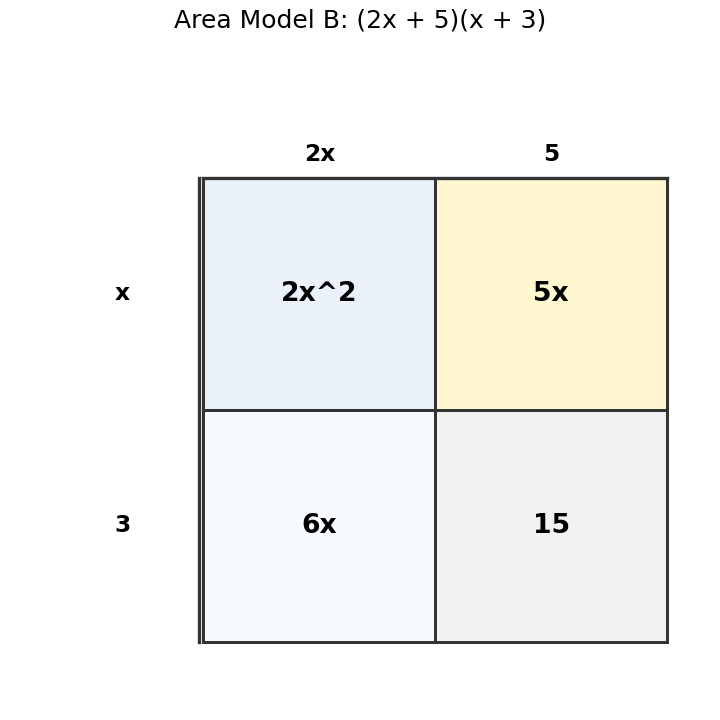

How many terms are in $$5x^3-2x^2+7x-9$$?
Multiply and simplify.
$$(x+2)(x+6)$$
Use Area Model B to explain why $(2x+5)(x+3)$ expands to $2x^2+11x+15$.

Create a rectangle-area situation represented by a polynomial product. Include dimensions, product expression, expanded form, and a short explanation.
Which equation represents a reflection across the $x$-axis?
Does $g(x)=6f(x)$ create a stretch or compression?
Does $g(x)=\frac{1}{3}f(x)$ create a stretch or compression?
Does a vertical stretch change the parent function family?
Complete the table for $g(x)=2x^2$.
| $x$ | -2 | -1 | 0 | 1 | 2 |
|---|---|---|---|---|---|
| $g(x)$ |
Compare $y=x^2$ and $y=-0.5x^2$. Describe both transformations.
Why does multiplying all outputs by $-1$ reflect a graph across the $x$-axis?
A graph was supposed to show $g(x)=-3f(x)$, but only a reflection was drawn. Explain what is missing and how to revise it.
Describe the translation in $g(x)=|x+4|-1$.
Write an equation for a square-root graph shifted right 3 and up 2.
A student graphs $y=(x-3)^2$ by moving $y=x^2$ left 3. Identify and correct the error.
Create two different translated parent functions that both pass through $(0,2)$. Explain why they are different.